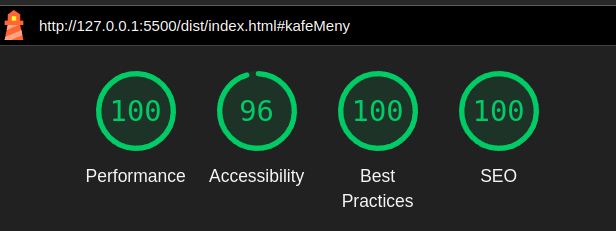

Om prosjektet
Vårt prosjekt for Emne 2 er en webapp som forbedrer kundeopplevelsen hos den fiktive kaféen "Bakst og Brygg." Den lar kunder enkelt bestille fra et fristende utvalg av baguetter, snitter, kaffe, klassiske kaker og tilpassbare kaker – alt gjennom et brukervennlig og elegant grensesnitt.
Kunder kan gjøre spesialtilpasninger, holde oversikt over handlekurven, og planlegge henting når det passer. For ansatte gir webappen enkel styring av lager og bestillinger, slik at driften går smidig.
Optimalisert for mobil og universelt tilgjengelig, leverer webappen en balansert løsning som gleder både kunder og ansatte hos "Bakst og Brygg."
Vår tilnærming og teknologier
I dette prosjektet har teamet vårt brukt en strukturert og kvalitetsorientert tilnærming for å levere en skalerbar, robust og brukervennlig løsning. Med god organisering gjennom GitHub Issues og GitHub Prosjekter har vi sikret klar prosjektstruktur, god oppfølging, og effektivt samarbeid. Her er de teknologiene og standardene vi bruker:
Prosjekttilnærming
1. GitHub Issues, Prosjekter og Agile-metodikk med Kanban-tavler
Vi følger en Agile-metodikk for å holde prosjektet fleksibelt og tilpasningsdyktig. Gjennom kontinuerlig iterativ utvikling og tilbakemelding kan vi raskt tilpasse oss endringer og forbedre prosjektet. Vi logger alle oppgaver i GitHub Issues og bruker prosjektfunksjonaliteten for å holde oversikt over fremdrift. Kanban-tavlen vår er koblet til Issues, slik at kortene oppdateres automatisk når vi refererer til Issues i commits. Denne strukturen støtter smidig arbeidsflyt og kontinuerlig forbedring, i tråd med Agile-prinsipper.
2. Node.js og npm
Vi bruker Node.js og npm for å administrere tredjepartsverktøy og avhengigheter som ESLint, Prettier, og Jest. Selv om vi ikke bruker Node på servernivå, gir dette oppsettet oss enkel tilgang til nødvendige verktøy og holder prosjektet oppdatert.
3. .editorconfig
.editorconfig sikrer at koden er formattet likt på tvers av utviklingsmiljøer, noe som reduserer inkonsistenser og forbedrer samarbeidet.
4. Lighthouse fra Google
Vi bruker Lighthouse fra Google for å måle og forbedre ytelse,
tilgjengelighet, beste praksiser, og SEO. Gjennom regelmessige kjøringer kan vi identifisere flaskehalser og
optimaliseringsmuligheter, noe som bidrar til en bedre brukeropplevelse og høyere kvalitet i prosjektet.

5. Gulp: JavaScript Task Automation
Vår kildekode er organisert i src-mappen. Siden vår
CSS- og JavaScript-struktur er modulær, trenger vi å slå sammen disse filene for optimalisering. Vi bruker
Gulp til å slå sammen og minifisere våre ressurser, som deretter genererer en dist-mappe for den
optimaliserte versjonen av webapplikasjonen.
HTML
1. Mobiloptimalisering
Nettstedet vårt er optimalisert for mobil, noe som sikrer at det fungerer godt på alle enheter og gir en positiv brukeropplevelse. Google prioriterer mobilvennlige sider, noe som også styrker SEO.
2. Semantisk HTML
Vi bruker semantiske HTML-elementer som
<header>, <section>,
<article>, og <footer>, sammen med riktig
bruk av heading-tagger. Dette gir en helhetlig struktur som ikke bare er mer
intuitiv for mennesker, men også enklere for søkemotorer å tolke. Den hierarkiske
strukturen gjør innholdet lettere å navigere, sikrer god tilgjengelighet, og
forbedrer SEO. Med semantisk HTML sikrer vi også at nettlesere og assistive
teknologier kan tolke innholdet riktig, noe som gir en bedre brukeropplevelse
og universell utforming.
3. WCAG (Web Content Accessibility Guidelines) og Forskrift om universell utforming av IKT
Vi følger WCAG-retningslinjene og norsk lovgivning om universell utforming av IKT for å sikre at nettstedet er tilgjengelig for alle brukere. Dette er ikke bare en standard vi følger, men også et kvalitetsstempel på brukervennlighet og tilgjengelighet.
4. ARIA (Accessible Rich Internet Applications)
ARIA-attributter forbedrer tilgjengeligheten for brukere med synshemminger og de som benytter assistive teknologier, som skjermlesere og leselist. Ved å gi tydelige beskrivelser og merking på dynamiske og interaktive elementer, sørger vi for at innholdet på siden vår er like tilgjengelig for alle, uavhengig av funksjonsevne. Dette er en viktig del av vår forpliktelse til universell utforming.
CSS
1. BEM (Block Element Modifier)
BEM-metodikken for CSS-klasser gir en modulær og skalerbar CSS-struktur som gjør koden lett å vedlikeholde og forstå, selv i store prosjekter. Denne tilnærmingen sikrer at vi enkelt kan utvikle og utvide prosjektet uten å miste oversikten. BEM brukes av anerkjente organisasjoner som Atlassian, Drobpox, JetBrains, Gov.uk, TechCrunch, og LinkedIn’s open-source design guidelines, for å nevne noen.
2. SMACSS (Scalable and Modular Architecture for CSS)
SMACSS gir oss en organisert og fleksibel tilnærming til CSS. Ved å dele opp stiler i funksjonelle moduler kan vi lettere administrere og oppdatere komponentene våre. Denne metodikken er brukt av store aktører som Mozilla, GitHub, Dropbox, og Salesforce for å oppnå skalerbarhet og en vedlikeholdbar CSS-struktur.
3. Modular Scale Typography
Vi bruker en modulær typografisk skala for å skape visuell harmoni og en konsistent typografi gjennom hele prosjektet. Dette styrker både estetikken og lesbarheten på nettstedet. Vår typografiske skala er basert på Perfect Fourth -intervallet fra musikkteori, som skaper en balansert og behagelig rytme i tekststørrelsene.
Dersom typografien vår ble konvertert til musikk, ville det sannsynligvis høres slik ut:
4. modern-normalize
Vi implementerer modern-normalize for å sikre at stiler behandles konsistent på tvers av forskjellige nettlesere ved å justere stilene til moderne standarder uten å tilbakestille dem. Dette verktøyet fokuserer på å forbedre cross-browser konsistens i standard elementers stil, som bidrar til en mer uniform opplevelse på tvers av forskjellige enheter og nettlesere.
5. Avanserte CSS-teknikker
For å forbedre modulariteten, vedlikeholdbarheten og fleksibiliten i stilene våre, benytter vi flere avanserte CSS-teknikker:
-
CSS Custom Properties (variabler) - Ved bruk av CSS-variabler
(
--my-variable-name) kan vi definere fargepaletter, spacing og typografi en gang, og gjenbruke dem på tvers av hele prosjektet. Dette gjør det enkelt å justere temaer og oppdateringer, og gir et konsistent utseende overalt. -
CSS-funksjoner - Vi bruker CSS-funksjoner som
calc(),min(),max(), ogrgba()for å gjøre komplekse beregninger direkte i CSS. Dette gir oss fleksibiliteten til å tilpasse layout og design basert på ulike enhetsstørrelser og skalaer uten ekstra JavaScript.
JavaScript
1. Modulær JavaScript-mappestruktur
Vi har brukt en modulær JavaScript-mappestruktur som organiserer koden etter funksjonalitet, med separate mapper for områder som autentisering, handlekurv og produkter. Dette sikrer at logikken holdes isolert og lett gjenbrukbar, noe som gjør prosjektet mer skalerbart og enklere å vedlikeholde. Ved å følge Model-View-Controller (MVC)-tilnærmingen kan vi enkelt endre eller utvide spesifikke deler uten å påvirke resten av applikasjonen, noe som fremmer en strukturert og bærekraftig utviklingsprosess.
js/
├── admin/
│ ├── inventoryController.js
│ ├── inventoryView.js
│ ├── ordersController.js
│ └── ordersView.js
├── auth/
│ ├── authController.js
│ ├── loginController.js
│ ├── loginModel.js
│ └── loginView.js
├── cart/
│ ├── cartController.js
│ └── cartView.js
├── checkout/
│ ├── checkoutController.js
│ └── checkoutView.js
├── products/
│ ├── cafeMenuController.js
│ ├── cafeMenuView.js
│ ├── cakeMenuController.js
│ └── cakeMenuView.js
├── shared/
│ ├── common.js
│ ├── controller.js
│ ├── model.js
│ └── view.js
└── utils/
├── clearLocalStorage.js
└── version.js
2. ESLint & Prettier
Kodekvalitet og konsistens sikres ved bruk av ESLint og Prettier, som opprettholder høy kvalitet og forhindrer typiske kodefeil.
3. Jest
Ved hjelp av Jest sikrer vi at alle funksjoner fungerer som forventet gjennom enhetstesting, noe som gir robust og pålitelig kode.
4. JSDoc
JSDoc brukes til å dokumentere vår JavaScript-kodebase, noe som gjør koden lettere å forstå og vedlikeholde.